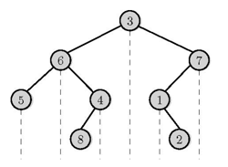
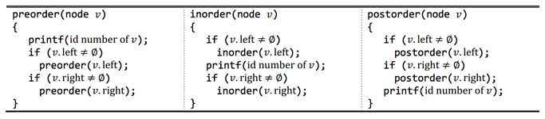

이진 트리는 매우 중요한 기본 자료 구조이다. 아래 그림은 루트 노드가 유일한 이진 트리이다. 모든 노드는 최대 2개의 자식 노드를 가질 수 있으며, 왼쪽 자식이 순서가 먼저이다. 노드 n개로 이루어진 이진 트리를 BT라고 하자. BT의 노드는 1부터 n까지 유일한 번호가 매겨져 있다.
아래 그림에 나와있는 BT의 루트는 3번 노드이다. 1번 노드는 오른쪽 자식만 가지고 있고, 4와 7은 왼쪽 자식만 가지고 있다. 3과 6은 왼쪽과 오른쪽 자식을 모두 가지고 있다. 나머지 노드는 모두 자식이 없으며, 이러한 노드는 리프 노드라고 부른다.

BT의 모든 노드를 순회하는 방법은 전위 순회(preorder), 중위 순회(inorder), 후위 순회(postorder)로 총 세 가지가 있다. 이 세 방법은 아래에 C 스타일의 의사 코드로 나와 있다. BT의 노드 v에 대해서, v.left는 왼쪽 자식, v.right는 오른쪽 자식을 나타낸다. v가 왼쪽 자식이 없으면 v.left는 ∅와 같고, 오른쪽 자식이 없으면 v.right는 ∅와 같다.

BT를 전위 순회, 중위 순회한 결과가 주어진다. 즉, 위의 함수 중 preorder(root node of BT)와 inorder(root node of BT)를 호출해서 만든 리스트가 주어진다. 두 순회한 결과를 가지고 다시 BT를 만들 수 있다. BT의 전위, 중위 순회한 결과가 주어졌을 때, 후위 순회했을 때의 결과를 구하는 프로그램을 작성하시오.
예를 들어, 위의 그림을 전위 순회하면 3,6,5,4,8,7,1,2, 중위 순회하면 5,6,8,4,3,1,2,7이 된다. 이를 이용해 후위 순회하면 5,8,4,6,2,1,7,3이 된다.
첫째 줄에 테스트 케이스의 개수 T가 주어진다. 각 테스트 케이스의 첫째 줄에는 노드의 개수 n이 주어진다. (1 ≤ n ≤ 1,000) BT의 모든 노드에는 1부터 n까지 서로 다른 번호가 매겨져 있다. 다음 줄에는 BT를 전위 순회한 결과, 그 다음 줄에는 중위 순회한 결과가 주어진다. 항상 두 순회 결과로 유일한 이진 트리가 만들어지는 경우만 입력으로 주어진다.
각 테스트 케이스마다 후위 순회한 결과를 출력 한다.
Input:
2
4
3 2 1 4
2 3 4 1
8
3 6 5 4 8 7 1 2
5 6 8 4 3 1 2 7
Output:
2 4 1 3
5 8 4 6 2 1 7 3